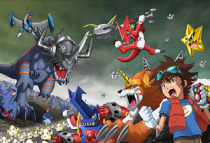
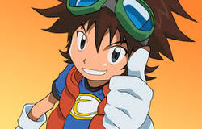
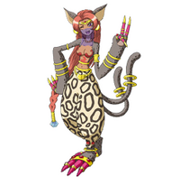

Digimon Xros Wars
 De: La Frikipedia, la enciclopedia extremadamente seria.
De: La Frikipedia, la enciclopedia extremadamente seria.

|
ATENCIÓN
El autor de este artículo pide una ayudita. Porque es más triste de robar que de pedir. Se le han terminado las ideas y pide de rodillas a los frikipedistas (más listos, inteligentes y guapos que él) que le ayuden a terminar o mejorar su obra.
|
| De la serie anime para todos:
|
| Digimon Xros Wars
|
|
|
| Género:
|
Shotacon, Lolicon, Bestiality, Furry y Yaoi
|
| Episodios:
|
54 + 25 (79)
|
| Autor del manga:
|
Akiyoshi el Hongo
|
| Publicación:
|
en el año 0, así es, nunca se publicó.
|
| Publicado en:
|
Revistas porno y una versión shotacon de Playboy
|
| Director del anime:
|
Akiyoshi el Hongo.
|
| Transmitido en:
|
Japón, Espiña, to'l mundo.
|
| Ovas:
|
2 o 3
|
| Películas:
|
No se dos como todos los digimon
|
| Notas
|
Apto para pedófilos,personas que odian pokemon y los Bakugan y para los furries.
|
«¡¡Diooos!! ¡¡Esta serie es estupenda!!»
~ alguién sobre la serie
«Se llama Digimon Fusión. »
~ Gilipollas sobre el nombre serie
«Se llama Xros Wars, y ese nombre le pusieron los gringos. »
~ Listo contestando a gilipollas de ante.
« Es una mierda, MLP es mejor »
~ Brony quejadose la serie
«Más Digimon »
~ Ash Ketchup sobre los digimon nuevo
«Otro Clon »
~ Taichi Yagami sobre Taiki
«Y va dos digimon en uno.»
~ alguién sobre la serie
«¡¡Diooos!! ¡¡otro clon!!»
~ Taichi Yagami sobre Tagiru Akashi
« Vuelvo a aparecer »
~ Taichi Yagami sobre Xros Wars Hunters
«Carais como mola dos en uno, por eso es fusión.»
~ Alguién sobre las dos serie de digimon en uno
Digimon Xros Wars después de tres años de haber terminado la quinta serie de la franquicia Digimon, donde en Gringolandia lo llama de forma diferente, y no quiero decir como se llama. La serie tuvo su aparecion en Japón el 6 de julio de 2010 (ante de Bronies), por la cadena televisiva TV Asahi (en vez de TV Fuji) además de que es dirigida por Tetsuya Endemoniado Endo y producida por el estudio malvado de Toei Animation. Las primeras imágenes que se difundieron de Digimon Xros Wars demostraron que los personajes serán similares a de las primeras cuatro series de Digimon (si sobre todo en Tai Yagami), incluyendo el uso de gogles característico del protagonista, los cuales fueron quitado en la quinta serie. Varios juguetes sexuales , juegos de cartas coleccionables y otros accesorios serán lanzados a la venta en semejanza a esta serie.
En esta nueva historia el protagonista es un niño de trece años llamado Taiki Kudo (si el clon de Tai Yagami) y cuyo Digimon es Shoutmon, quienes acompañados de sus amigos la puta Akari Hinomoto y el gilipollas Zenjirou Tsurugi tendrán que salvar al Digimundo, el cual se encuentra en peligro (vamos lo mismo de siempre).
En esta temporada de Digimon las digievoluciones son distintas que en las demás temporadas, la cual se requiere uno o mas digimons para fusionarse con otro de cualquier nivel o tipo, combinando sus partes, a lo que se le llama DigiXros (digi cruce o digi sexo), a diferencia que las otras temporadas que cada digimon tenía su digievolucion en esta temporada digievoluciona Shoutmon en varias formas x2, x3, x4, x5, x7 y Shoutmon x7 (por eso lo de X sexo).
En Latinoamérica se estrenó en Cartoon Network (si en Ben 10 Network) el 1 de mayo de 2014 Y en España se estrenó el 26 de marzo de 2014 en Televisión Española.
 El grupo más pendeja
de maricones .
Historia
Hay otro mundo más allá del nuestro, si muchos mundo). Un mundo digital donde poderosas criaturas conocidas como Bakugan “Digimon batalla” por la supremacía. Pero el destino del mundo digital está en riesgo por las fuerzas del los Pokémon, y los Digimon necesitan nuestra ayuda. Un muchacho llamado Taiki es transportado al mundo digital, junto con sus dos exclavo mejores amigos.
Los niños conocen un Digimon llamado Shoutmon y sus compañeros Digimon formidables pero estrafalario. Shoutmon quiere ser el benevolente “Rey de los Monstruos”, y pide ayuda a los niños a alcanzar su meta. Taiki inmediatamente accede a ayudar, a crear una aventura épica y participar en duelos eroticos como nada que hayas visto antes. Ahora, el destino del mundo digital está en las manos pajeras del chico.
Personajes
- Taiki Kudō: El protagonista y el General Franco de este grupito, quien porta sus gogles así como los clones de Taichi Yagami. Aunque es muy amable y atlético (igual que Yagami), es también un genio estratega, aunque no sea uno de ellos . Lidera el equipo Xros Heart para luchar contra el Imperio Hacendado, quienes buscan dominar el mundo. Es dueño del Xros Loader rojo, en el capítulo 30 se descubre que fue elegido por el legendario follador Omegamon quien estaba buscando a un muchacho que pudiese escuchar la melodia de michael jackson a los Digimon, además de tener un valor y fuerza como de Chuck Norris inquebrantable haciendo que Taiki sea el enemigo más temido de todo el ejército bagura y del mismo basuramon digo Baguramon.
 El niñato este clon de Tai Yagami
- Akari Hinomoto: Amiga de Taiki quien es un año menor que el pero es muy puta. Actúa como su puta mayor y le da mucho apoyo, llamándose a sí misma su "prostituta". En el anime, se queda en Tokio y promete a Taiki que regresará al Digimundo, después de deja en Tokio con el imbecil de Zenjirō Tsurugi.
- Zenjirō Tsurugi: Practicante de sexo del distrito de Koto, se autoproclamó el "eterno rival" de Taiki, después de ser vencido por Taiki en un torneo de sexo. Utiliza drogas en más de una ocasión a reemplazado a Taiki como "líder temporal" del Xros Heart. En el anime, le promete a Taiki que volverá a ayudarle al Digimundo y le dejo en Tokio con la puta de Akari.
- Kiriha Aonuma: Es un chico pendejo que pelea utilizando como compañero a el Greymon de Tai. Elimina a sus enemigos generales. Es el General de Blue
dragon Flare.
- Nene Amano: La segunda puta, una puta misteriosa y analítica que
folla ayuda a Taiki, es muy fuerte y viaja en el Mundo Digital en busca de su proxeneta hermano Yuu,y hará lo que sea por encontrarlo y da el dinero que le debe. Antes fue la General vampiro de Twilight que obedecia las ordenes de el gran gilipollas de DarkKnightmon pero este la violo traicionó y ella se unió a Xros Heart follado ayudando a Taiki y a los demás. Antes poseía un Xros Loader negro pero a partir del ep 24 su Xros Loader cambia de color a lavanda demostrando que perdió esa frialdad que tenía antes y aprendió a confiar mas en sus nuevos amigos.
- Shoutmon: Es el
exclavo Digimon de Taiki y líder del Xros Heart. Es un pequeño dragón cibernético (aunque parece una mierda) muy enérgico y cobarde valiente. Quiere convertirse en rey del Digimundo para así poder gobernar a todos imponer la violencia que todos los Digimon puedan enfrentase y vivir en la mierda. En el episodio 30 se descubrirá que es el heredero del poder del legendario dictador Royal Knight Omegamon y además de revelar su digievolucion, OmegaShoutmon.

Dorulumon en un versión Furry.
- Dorulumon: Un digimon con forma de lobo, que pertenence actualmente al ejército Furry (por que puede adopta su cuerpo furry). Aunque en un principio no aceptaba la propuesta de unirse a los digimon, al ver la confianza que Taiki puso en él, decide unirse al equipo. Es se follo a Renamon tanto por versión furry como a 4 patas, y hizo un trio con Krystal pero Fox McCloud se opuso.
- Starmon, Pickmon y Chibickmon: Es el mismo digimon (digievoluciones digo) solo que separado en tres.
- Lillymon: Es una Digimon hada que es amiga muy cercana a Shoutmon ya que viven en la misma Zona Césped (Verde) bla bla bla mejor dicho, era la digimon digievolucion de palmon el digimon que tuvo Mimi en Digimon Adventure de digievoluciono en Tokio cuando Myotismon ataco Japón bueno ya lo sabe.
 Bastemon, como se parece a Felicia
- Persiamon (Bastemon): Es la princesa digimon del Castillo Bastia un digimon con forma de una mujer gato y siente gran deseo sexual por su caballero nombrado Taiki, la viste, me recuerda a Felicia de Darkstalkers, luego os pongo una foto de ella.
- Beelzemon (Beelzebumon): Es el Chuck Norris en forma digimon, si el que salia en Digimon Lammers , el que le gustaba Renamon, pero como esta se follo a Dorulumon, le busco a otra pareja Mervamon.
- Spadamon: Es un digimon que domina una espada y/o se transforma en una, tiene deseo sexuales con coronamon, se cree que puede ser una chica, aunque no lo parenta.
- Mervamon: La guerrera de Tierra Miel, se une al equipo Xros Heart como compañera de Nene, cuando le ayuda a recuperar de la Muerte. Es uno de los miembros más poderosos del Xros Heart junto a Beelzemon,como ya os conté, Beelzemon iba a salir con Renamon, pero renamon se lio con Dorulumon y los guionistas fumados, crearon a Mervamon (hay rumones que dice que es una digievolucion de Spadamon, si ya no se parece tanto pero los digimon no se parecen cuando digievolucionan).
Los pendejos villanos
El Imperio contrataca Bagra:
- Bagramon: Lider de los pendejos. Tiene suficiente poder como para tener a sus tres genitaales en regla y se le conoce por haber "sellado" con la espada y también por ser mayor imbecil de DarkKnightmon. En el capítulo 29 reúne todos los Code Crown y reconstruye el Digimundo a su imagen y semejanza.
- Tactimon: Principal pendejo Imperio Bagra. Temido por su legendaria espada que la tiene grande, con poderes seminante y fue por una puta que contrato Bagramon. En el capítulo 30 libera todo el poder de su espada pero aun así fue derrotado por
la polla OmegaShoutmon.
- Lilithmon: Es la puta que Bragamon y Tactimon contrato para sexo, hay rumores de que es la digievolución de Bastemon.
- Olegmon, El Pirata cibernetico: Uno de los Siete Generales de la Muerte que sirve hackaar cuentas y poner virus informatico, pero se volvió bueno al ser derrotado por Taiki, después revive junto por ayudar a Taiki en contra de DarknessBagramon (el super nivel más pendejo de Bragamon.
¿Sabías que...
- ... existe otra versión de digimon Xros Wars pero esa lo hacer más tarde?
- ... que Renamon aparece en esa versión?
- ... que se fusiona a los digimon?
- ... que Bagramon ganó a premio al más pendejo de Mundo Digital?
- ... lo que dije ante era un spoiler?
- ... que Bastemon y Lilithmon son iguales?
- ... que Mevarmon y Spadamon usa espadas pero no es de consolador?
- ... que Beelzemon le gusta Mevarmon?
- ... y que Renamon hizo sexo con Dorulumon?
Ver también
Autor(es):
- Fordus
- Juan Fernandez Soria
- Mukuro Rokudo
Frikipedia 2005-2016, Licencia
GFDL 1.2 - Extraído por FrikiLeaks